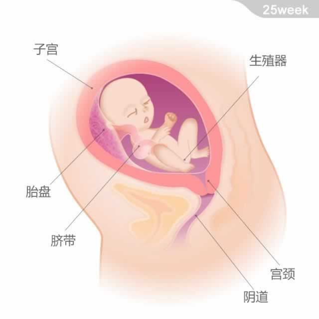

 宝宝的重量约为910克，从头部到臀部的长度约为23厘米。 最近，由于脂肪的迅速积累，宝宝的体重有了明显增加。脂肪可以帮出生宝宝保暖，以便他可以适应离开子宫后相对的“低温”环境。 宝宝的听力神经系统在此时已经发育完全，对声音的反应更为敏感了。听到声音时他的脉搏跳动会加快，甚至会随着声音而移动。他的眼睛也已经可以完全睁开。 宝宝会继续在羊水中练习着呼气和吸气，为出生后的呼吸做着准备。如果是男孩，他的睾丸开始下降到阴囊中了。